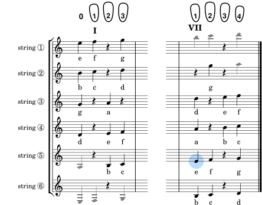
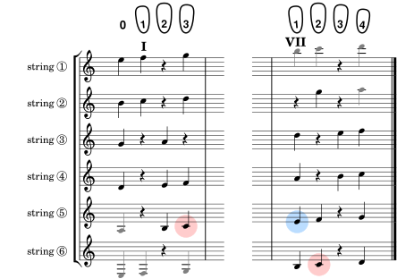
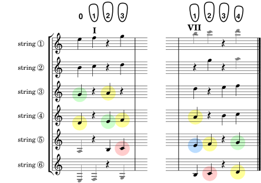

And you'll be able to play every note in this book!
This is it. It uses music notation to show notes the way they appear on a staff, but the six staves are laid out like the strings of a guitar, which, together with the fingertips at the top, show what string and finger to use to play each note in both seventh position and first.
For example, it tells you the blue note in seventh position is played on string ⑤ (that row) using your first finger (that column), same as you just learned from the ordinary fretboard diagram in the previous section on Finding Seventh Position By Ear. But here you get to see what that note looks like on the staff (it's on the lowest line) so you can recognize it when sightreading.
This diagram is not music for you to sightread. It's a visual map of the fretboard, labeled by the notes themselves, just like you'll see when sightreading. For the blue note above, the label is instead of the E in ordinary fretboard diagrams. You can see how to play that by where it is placed in the diagram. It's like having a little sticker on your fretboard, except you're never looking at the real fretboard again. You just look at the musical fretboard diagram and press the virtual sticker for the note you want to play, i.e. you finger the real guitar where the virtual sticker is in the diagram. Soon you won't even be looking at the diagram on the page; you'll be seeing it in your mind's eye as a lasting visual memory.
You've learned the blue note as the way to find seventh position. Good, we'll keep that association. But now we want a special note that will remind you that all the notes in this book are playable in two positions.
That special note's sticker is which stands out visually as the note with a line through it just below the staff. It also has a special name, “middle C”, from being in the middle of a piano keyboard and being midway between the treble and bass clefs. Actually, when played on guitar it sounds an octave lower than the piano's middle C, but that's just a convient convention so guitarists don't have to learn the bass clef. It's also special because it's the “root” of the major scale for the natural notes. The “Do” in “Do, Re, Me”. So we give it the special color red:
Look at the diagram and ask yourself how would you play that red note, , in seventh position. Imagine that diagram as a guitar neck where you can reach around to the sixth string and use your middle finger to play the red note. Press the sticker while you imagine plucking the sixth string. Can you visualize doing that?
Now do the same visualization in first position. Imagine sliding your left hand down the neck to the left part of the diagram until your first finger is just below the first fret. Looking at the diagram, imagine playing the red note that position. Which finger would you use, on which string? Should be your third finger on the fifth string. Touch that third finger to your thumb and press just like you're fretting the note. Press hard while your eyes are still focused on the sticker. Feel like you're playing that sticker.
Let the red note remind you of this visualization experience of playing the same sounding note, , in two positions. Going forward, you'll be focusing on other stickers like without any colors to guide you, but the idea of two ways to play each note should still be there. Right?
It's time to get out your guitar and explore playing some random notes from the musical fretboard diagram. Put your hand in seventh position without looking at the real fretboard (remember the blue note?). Now look at seventh position in the diagram and choose a note at random. Focus on its “sticker” while you interpret where that sticker is located in the diagram, i.e. which finger slot is it in, and on which string. While still focusing on that sticker, move that finger to that string and really play the note on your guitar. Choose another note and repeat until you feel comfortable interpreting the diagram as a guide to playing whatever note you choose to look at.
After noodling around in seventh position, do the same in first position. You don't have to do the same random notes you did before; just explore what it's like to find and play notes in first position while looking only at the diagram. Your choices should include some of the open string notes, but don't let your eyes wander off the diagram just because you know where the open strings are. Keep your focus on the note sticker for that open string while you think “Right, no finger needed for that note!” It's a memorable feature found only in first position, so build that memory.
Now that you're comfortable with “finding and playing the stickers” it's time for a more structured assignment that's still simple enough to keep your eyes on the musical fretboard diagram while playing the notes. It's playing the one-octave scale.
The music above includes all the notes in the musical fretboard diagram. Black notes are playable in both first and seventh positions while the gray notes are either too low for seventh or too high for first. Labeled notes are the familar one-octave C major diatonic scale.
If this music were more complicated, you'd have to keep jumping back and forth between it and the musical fretboard diagram to see how to play each note. But this scale is easy to keep in mind while still looking only at the musical fretboard diagram: just start with the sticker (a.k.a the red note) and keep going up ( ... ... ... etc.) until you play the highest note in this scale ( ).
Do that a couple of times in seventh position, then switch and do it in first position. When you're comfortable with that, do the scale starting with the high note first and end on the low note. This scale is so fundamental, I don't mind if you commit it to muscle memory, so long as you do it both positions. But it will help if you look intently and purposefully at each note's sticker as you play it, because that visual association is literally your key when you get to sightreading.
Now that you can see the one-octave scale in the musical fretboard diagram, take a step back and look at the big picture it presents. In each position, the scale is a stack of notes starting with the red note at the bottom. But seventh position is higher up the neck so it's red note and the stack of notes above it are shifted over by about one string lower to compensate. The full stack of all the black notes hits the basement in seventh position, while that same stack hits the ceiling in first position.
At this point you're able to play any of the notes in first and seventh position if you're looking at the musical fretboard diagram. But that's not sightreading.
For sightreading, you need to be looking at the real music score. Looking back and forth between the score and the diagram is almost as bad as looking at the real fretboard. To sightread, you need to know the diagram without consulting it all the time.
In my experience, the best way to build your memory of the diagram is to concentrate on the location of just a few notes, and then sightread some real music that uses only those few notes.
At first you may stumble a bit and your ear will alert you that you probably played a wrong note. So you stop and double check the diagram, then go on and finish the piece. But you don't practice the piece until you do it perfectly; that's memorizing the piece instead of memorizing the diagram. Instead, you go on to a fresh piece.
After a few such pieces, you start getting more involved in playing the music than in finding the notes, and that's when you realize you've learned how to play those notes without the diagram. Then you can go back to the diagram and repeat this process to learn a few more notes.
Overall, that's the plan for this book. Each chapter will add some more notes and provide real music that uses those new notes in addition to notes you learned in previous chapters. You'll learn sightreading by sightreading.
The catch is in getting started. Even the simplest tunes require about six notes. So the rest of this chapter is to help you learn your first six notes as two groups of three.
It's their position numbers within the scale that are odd: 1st, 3rd and 5th.
We start with them because you already know the first two as the red note and, in position seven, the blue note. These notes also fall on neighboring lines. See how nicely they stack when they're in a chord? They also sound good together. They harmonize without dissonance. Together they're part of the C major chord you've probably already played in first position.
Your goal now is remembering how to play these three notes without looking at either the musical fretboard diagram or the real fretboard.
Get your guitar and go to seventh position (without looking). Can you remember where to play the sticker? We made a big deal of it being your first note in two positions. Even gave it a special color, red. Try to visualize the diagram in your mind. Where was that red dot? And for that matter, what sticker was the blue dot on?
These are the things you need to remember from the diagram. So go back and take a quick peek at the diagram for seventh position. And while you're there, notice where the sticker is located. It's the third of our odd notes, so now it's important too. You need all three: , and .
Okay, if you think you've got it now, try playing this little 8-bar waltz that uses only those three notes. The curved lines are phrase marks to help you get into the swing of things. Think “Oom, pah, pah”. Begin in seventh position, then repeat in first.
Got it? Now play this familiar bugle rhythm. It's been simplified slightly to use only the same three notes you just learned, but it's long enough to keep you from peeking at the diagram.
That's what sightreading will feel like. The notes keep coming and each one has to be visualized in the diagram until your fingers do the right thing as soon as your eyes fix on a note. It may feel like a panic at first, but it will become a joy the more you do it.
Now we pick up the even notes in between:
These all fit nicely together in the spaces between the lines of the odd notes, and these also harmonize well with each other. As they sit together on the staff they look like we just moved our three odd notes up by the same amount.
But that impression is wrong! Our nicely stacked chord has moved up from C major to D minor! Ordinarily music notation is like a picture or graph of how the music sounds, and it even allows immediate understanding of the intervals (like octaves, fifths and thirds) between most notes. But it can't distinguish between major thirds (4 frets) and minor thirds (3 frets).
The fundamental reason is that the lines and spaces represent successive notes in the scale of natural notes, and some neighboring notes are closer together in pitch than others. In this case, note 4 (an F) is only a half step (1 fret) above note 3 (an E), the other notes of our triads differ by a whole step (2 frets). So moving up from a line to a space isn't the same amount for all lines/spaces.
Realizing this may help your sightreading on guitar. You probably noticed that the musical fretboard diagram often, but not always, skips a fret between neighboring notes, using a rest sticker as a separator. This isn't haphazard. There are only two cases where neighboring notes have no separator. An F is always the next fret above an E, and C is always the next fret above B. Remember E-F and B-C are close and that may help when you're already playing one of them.
Getting back to learning these three new notes, here's an updated diagram showing where we are now (each chapter will have it's own such diagram with the same color scheme). We'll keep the one blue and two red notes as familiar points of reference, but otherwise the notes you've already learned (like ) will be in green, and new notes being introduced for the first time will be in yellow (like ).
While you're learning these new yellow notes ( , and ) it may help your memory of them in these two positions if you try to play all three as a chord. Try it in seventh position. Then in first. Notice the difference? In seventh position they're on separate strings so they can all ring together. But not in first. Turns out the opposite is true for our three odd notes (which you know from your memory of the diagram, since you already learned those notes).
Well, you know the drill by now. Learn the three yellow notes by studying the diagram, then test and strengthen your memory by sightreading. Begin reading those notes in this version of our little waltz. Again, it looks very similar to the same tune for the three odd notes, but you'll hear the difference when you play it.
And here's our bugle rhythm on those same three notes, even though a real bugle could never play in a minor key. Remember to play both of these tunes in both positions.
You've reached a significant milestone in learning these first six notes. Now you're ready to do some real sightreading of real historical melodies. In fact, everything in the next chapter (Group A Exercises) uses only those six notes, and they're all real, historical melodies, most of which you'll recognize once you play them.
To make it a bit more fun, each tune begins with a one-line riddle or hint that may make sense only when you recognize the music.
Now that you've graduated to real sightreading, there's another benefit. You won't have to read so much text, instead you'll read music at your own pace. Each chapter will have a diagram highlighting a couple of new notes, but the rest is just music that includes those notes.